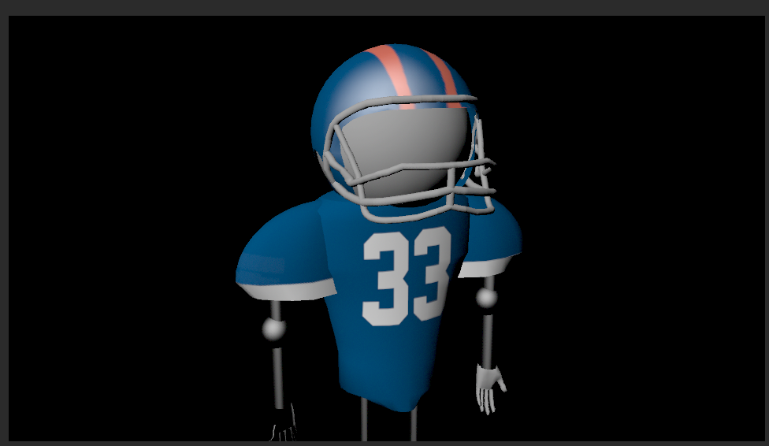
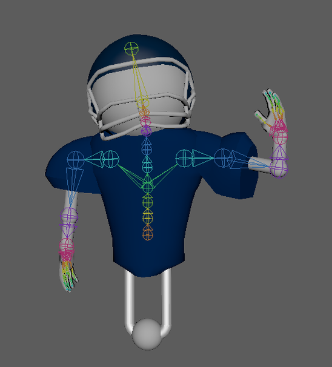

The Huddle
About The Huddle
The short animation, The Huddle, was inspired by a famous American football moment, in which Odell Beckham Jr. of the New York Giants, makes a one-handed catch. A 4-person team decided upon the idea after deciding that recreating an iconic sports scene would be exciting and be a great test on our 3D graphics abilities.
My Role
Video Editing, Animation
Pre-Production
After we determined the concept and the story, we mainly focused on writing the script of the animation and we created main characters and environmental settings on sketches. To combine all the sketches and storyboard together, I used Adobe After Effect to make a storyboard video.
Production
Models are the basic parts of a 3D animation. We designed a unique football player model. Unlike normal football players which move with two feet, our players move using wheels. This made it much easier to give off the impression that the players were moving, and so more focus could be put on the players moving their upper body.
To make sure the player model moving and acting smoothly, we added a lot of details when rigging. For example, the rigging of fingers can make the player’s action fluid while catching and holding the football.
The Animatic can give us a sense of future’s work. It includes the basic animation, scene order with almost all the soundtrack.
Post-Production
Based on the feedback from Animatic, we added more detailed animatic movement and changed the order of video sequence to the final version. Also, more sound effects were added to the final animation video.